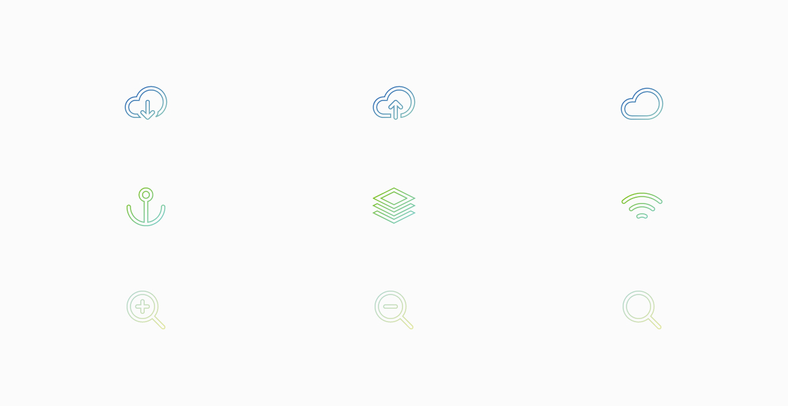

Animations & Photography
10 min readFor a quick overview, here’s a list of all the completed projects. Concept work and development can be found below.
End of year show (Photography)
Group project (Photography)
Sketchbook project (Photography)
Walk cycle (Animation & After Effects)
Walk cycle (Animation & After Effects)
Idle cycle (Animation & After Effects)
Parallax animation (Animation & code)
SVG and logo intro (Animation & code)
Photography
The Motion Graphics Workshop module was beneficial in many ways, but I felt the need to apply it to my own field — which is web design first and photography second. The module started off with photography, which is a field I have a fair amount of experience in already, but it was refreshing to explore the fundementals once again.
The module outline emphasised the ability to take well-composed pictures as well as applying basic photo editing in post. I like the post-process editing, which is why I shoot in RAW with a neutral colour profile. The flat image might not be ideal for publication, but in my experience it’s the superior way to go if you intend to edit your photos at all — which I usually do, even if it’s just adjusting contrasts and setting the correct white balance.
I shoot with a basic DSLR, which is certainly getting old (2006), but that also means it can take a beating without a worry. I also use a standard 50mm 1.8 lens, and I do all my colour editing in Adobe Lightroom 5. This includes, but is not limited to curves, white balance correction, lens correction, fixing chromatic aberration, and adjusting exposure, contrasts, whites, blacks, highlights and shadows. Photoshop is also being used for complex photo manipulation like removing artifacts, but I rarely have to.
The modules are overlapping a lot this semester, and I have covered photography in one way or another in all my modules. To demonstrate my learning outcome from this particular part of the module, I have compiled some photos from the end of year show, as well as some of the photos for my group project. It’s also worth mentioning the pictures in my Sketchbook series. I compiled some of them in a slideshow here as well, but to see them in full and in context, you should explore the projects instead.
Animations
Animations are interesting — they draw attention to themselves and they can be extremely powerful when used correctly. On the web, I believe they should be subtle and meaningful — this traditionally means hover effects, but later web trends encourage animation of content, animated user feedback, and even complex parallax effects.
I wanted to apply what I learned about animations to the web, and I have therefore made a few code-based animations along with the required After Efffects animations. I’ll get to those in a bit.
Walk cycle (After Effects)
I think it’s appropriate to start off with what was asked of us this semester, which was primarily a walk cycle, as well as the character design that comes with it. I looked into games and their animation style, and I wanted to do something from Minecraft – but with a few more pixels.
My initial approach was something like a Ghast from Minecraft or the main character from BADLAND. Neither are bound by the laws of the physical world, giving me more creative freedom. They both came with the obvious flaw however, because they were both flying.
The second approach was something more of an Enderman from Minecraft. The character is not portrayed as very friendly, which is something I wanted to change. I gave the character longer legs to reach the ground, as well as knees to add a semi-realistic structure and a logical place to bend the otherwise straight line.
The walk cycle is animated in After Effects at 60 frames per second, using keyframes to set key points in the animation. Emphasis has been put on follow through animation and weight. The head functions as a body as well, and shows the first basic principle of animation when it squashes and stretches. The pace is slightly pronounced in order to exaggerate the motion, and the full animation can be found on the DMD server.
I also received feedback from last semester’s walk cycle on the movement of the face, and how it was too static and didn’t move with the body. I wanted to emphasise that motion this time, by moving the face with the body even though we’re in 2D space.
SVG (Code)
As of right now, my phone has a higher pixel density than my laptop. Scalable Vector Graphics (SVG) are not only lighter than your traditional PNG or JPEG, but they look crisp on any screen size. You can also animate it, and when you compare animated SVGs to mp4 files, it just makes sense to use SVGs for web. I enjoy line-drawings and I wanted to see if I could animate it with code. For the record, I could.

The effect is achieved by using the CSS3 property stroke-dashoffset, and making the offset equal to or longer than the path-length itself. This gives the illusion of a drawing when the offset-value is animated back to 0.
@keyframes stroke
from
stroke-dasharray: $path
stroke-dashoffset: $path
to
stroke-dasharray: $path
stroke-dashoffset: 0
The animations will animate in from left to right on each row, with a 0.5 delay between each animation start. The animations themselves will lasts 3 seconds with easing in and out, and the delay is implemented through a looping Sass argument.
$icons: 9
@for $i from 1 through $icons
.delay:nth-of-type(#{$i})
animation-delay: (0.5s * $i)
To explain, it runs through the argument 9 times as defined by the $icons variable. It will generate 9 classes, with a corresponding number. This is followed by 0.5 seconds times the number, so the first class will use a delay of half a seconds, the second class will use a delay of one second, and so on. It essentially generates this CSS output:
.delay:nth-of-type(1)
animation-delay: 0.5s
.delay:nth-of-type(2)
animation-delay: 1s
.delay:nth-of-type(3)
animation-delay: 1.5s
.delay:nth-of-type(4)
animation-delay: 2s
..
I also implemented a jQuery listener so you can click the icons to make the animations animate back to their initial state. Try clicking them!
Parallax (Code)
This effect is not particularly meaningful, and I’d be tempted to call it art instead. It is however demonstrating the parallax concept covered in one of our first After Effects lectures, by moving layers at different speeds. For this particular project, the animation is tied to the user scroll position, and will move the front layers faster than the ones “further away” to add the illusion and perception of depth.
As this is merely a concept, the effect is optimised for Google Chrome on Macs at specifically 1280 pixels width. This is due to the positioning of the aircraft, but the parallax effect should work up to 1920 pixels. The effect is disabled for mobile users for performance reasons.
The effect itself is achieved by animating the Y position of each layer, using transform: translate3d to push the tasks to the CPU instead of the browser. This is referred to as hardware accelerated animations. It’s also a cheap way of animating (as in not very heavy for the browser to render), and performs better than changing values like top and bottom in JavaScript or pure CSS.
offset4 = -(scrollVal * -0.6).toFixed(1);
offset3 = -(scrollVal * -0.5).toFixed(1);
offset2 = -(scrollVal * -0.4).toFixed(1);
offset1 = -(scrollVal * -0.3).toFixed(1);
offset0 = 0;
layer1.style.transform = "translate3d(0, " + offset1 + "px, 0)";
layer0.style.transform = "translate3d(0, " + offset0 + "px, 0)";
..
For the sake of argument, the same effect can be achieved with a looping Sass argument with translateZ and scale, but the performance suffers in anything but Chrome on Mac — to the point where it even stops working in Safari:
$layer: 5
@for $i from 0 through $layer
$x: ($layer - $i) / 2
.parallax-layer-#{$i}
transform: translateZ(-100 * $x#{px}) scale($x + 1)
Other (After Effects)
I also included some previously made animations. Namely a walk cycle and a corresponding idle animation. These were both developed to match the end of year show theme, but I never found a way to implement them in a meaningful way. The character’s name is Kevin by the way.
Reflection and conclusion
Subjectively, I think the second year should be used to specialise, and thus I felt it was more important to take the core elements from this module and apply it to my specialist field. As of right now, for me, that is web design and development, and this module speaks directly to that particular field. Yes, the Internet is famously claimed to be 70% typography, but the remaining 30% include photos and animations.
Given more time, I’d add deeper browser and screen support for the code-based animations. The sites are responsive, sure, but that’s a given these days — the challenge is providing deep browser support and an optimal user experience for any given device. I believe they work well as concepts, but they would have to be optimised and reviewed before they could be launched to the public.
I found the module useful to my field, as demonstrated by applying animation principles to code, and by publishing photographs to the web. Sure, good copy is important, but a picture will still draw the user in first. There is also always room for delightful animations, as demonstrated time and time again. It adds value to a website, and it’s definitely a skill worth having.